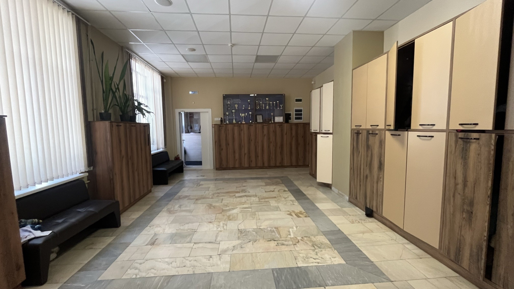
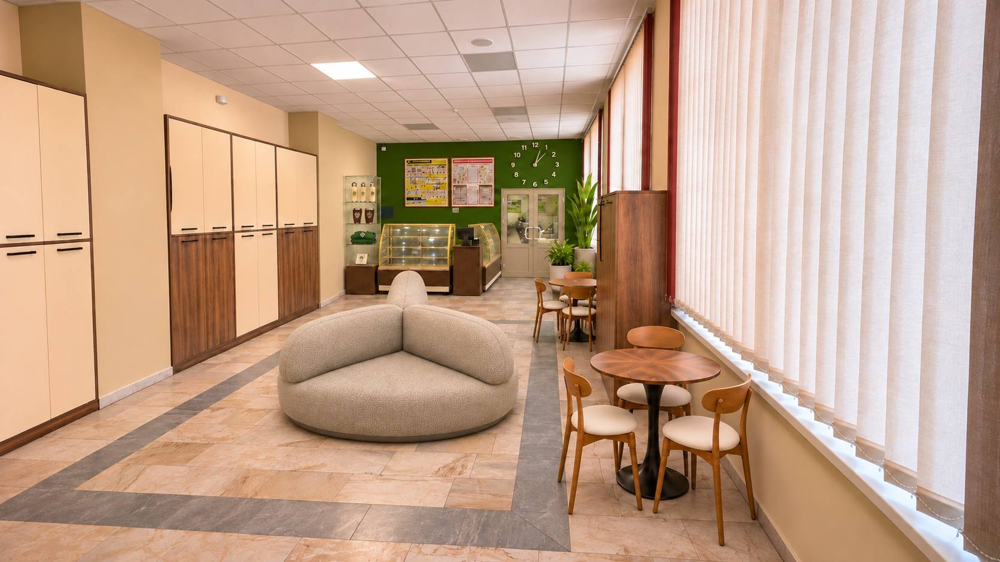
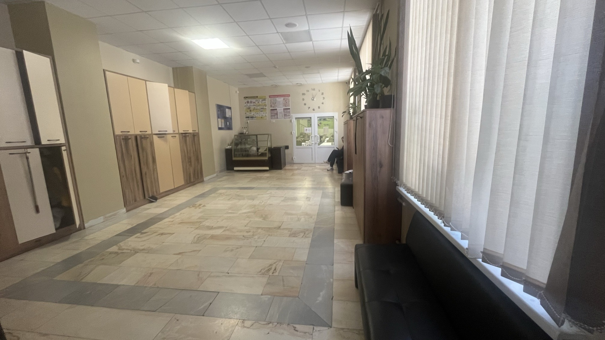
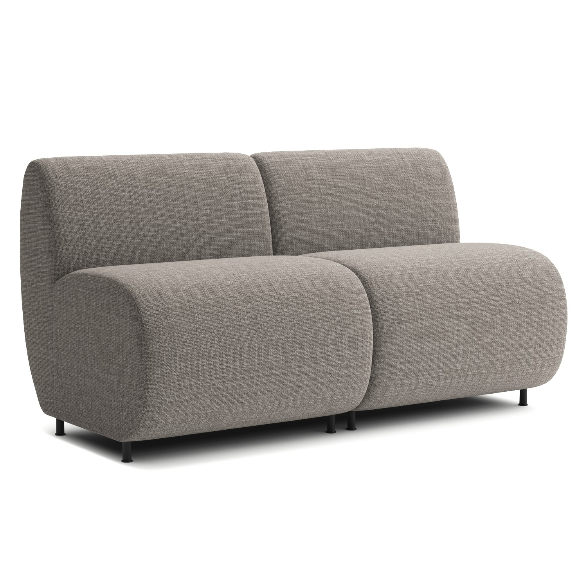
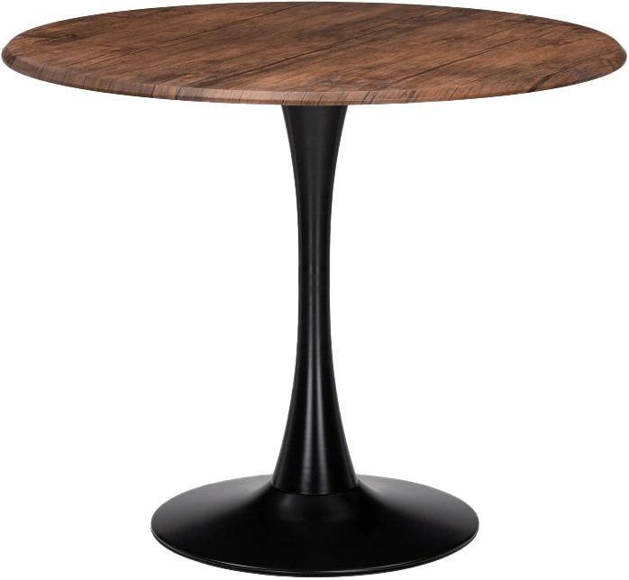
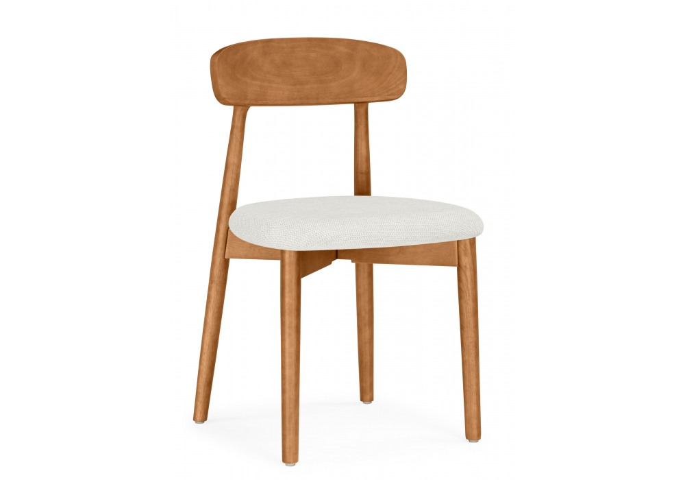
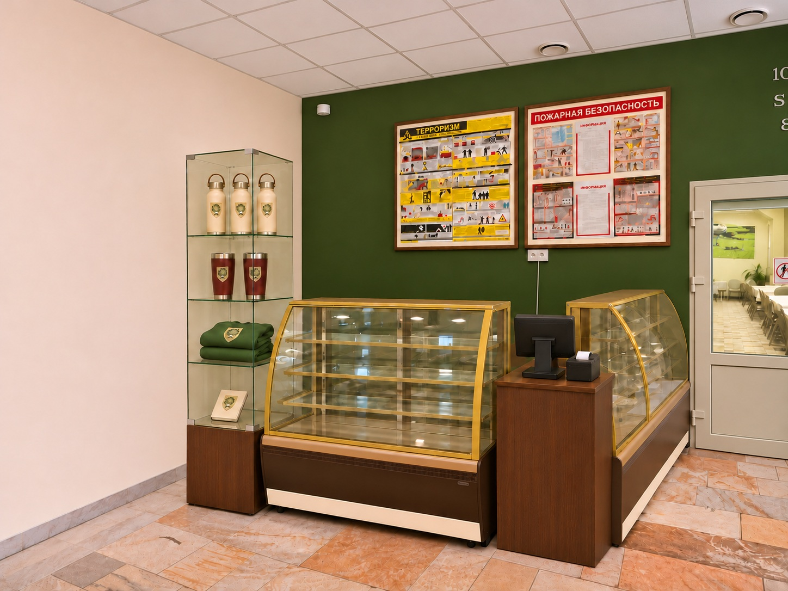

Размер La Isla
192 × 154 см по полу. Высота сиденья 39 см, верха спинки 77 см по чертежу 314.10.VRH. Пропорции обратного вида приведены к этому ориентиру.
Каталог SancalДва ракурса La Isla, существующие часы, тёплые бежевые двери и рабочая зона кассы.
02 / Холл
Сохраняем древесину и зелёную стену с наградами. Варианты отличаются мягкой группой, озеленением и акцентами; два круглых стола остаются у окон.
 Проект
Проект

Исходное фотоLa Isla вдоль холла. Три кашпо разной высоты собирают растения в одну композицию; два круглых стола у окон сохраняются.
Открыть проект крупноSancal La Isla / малая версия
от 480 820 ₽
Опубликованная цена IB Gallery за 314.10.VRH в отделке 2.
Карточка с ценой и размеромТкань Gabriel Cura 61168 (Serie 3), матовый цоколь 093 Gris Cuarzo. Это выбранное направление; его окончательная стоимость подтверждается спецификацией.
Две точки с EU-розетками или USB-A/C — фабричная опция. Питание из пола под диваном, доставка и занос требуют отдельного решения.
Проверено 18.11.2026. Базовая цена не является счётом за показанную ткань, KIT и поставку в Ростов.

Проект
Исходное фотоТа же La Isla с другого конца. Цифры и стрелки часов остаются на стене. Дверь показана в тёплом бежевом с парными ручками.
Открыть проект крупно192 × 154 см по полу. Высота сиденья 39 см, верха спинки 77 см по чертежу 314.10.VRH. Пропорции обратного вида приведены к этому ориентиру.
Каталог SancalСохраняем штатные отдельные цифры и стрелки, закреплённые на стене.
Сохраняем остекление и обе ручки. Для жёсткого ПВХ существуют специальные покрытия. Сначала определить профиль, уточнить гарантию и сделать пробный выкрас. Стекло, уплотнения и фурнитуру защищают.
Рекомендации VEKA по ПВХУ пары ТЕЙП 150 × 160 см плюс зазор. Проходы, открывание шкафов и питание проверяются по обмеру.

2 шт.
150 × 80 × 80 см
Рогожка Матрикс 04, серый; низкие металлические опоры
85 400 ₽ / шт.
Выбран заказчиком. Цена конфигурации SK-00044811 — 85 400 ₽ за один; пара — 170 800 ₽. Срок изготовления уточняется у производителя. Партия двух штук и получение в Ростове не подтверждены; другая ткань может изменить цену.
Точная карточка товара
2 шт.
Ø90 × 73 см
Орех кантри / чёрная металлическая опора
12 990 ₽ / шт.
Код 530837. Продавец показывает наличие; у производителя ожидание 02.12.2026. Два стола и срок до Ростова подтвердить.
Точная карточка товара
6 шт.
50 × 45 × 81 см
Орех / бежевая рогожка
5 896 ₽ / шт.
В карточке есть наличие. Шесть штук одного исполнения и доставку в Ростов подтвердить.
Точная карточка товара03 / Касса и мерч
Две одинаковые низкие витрины под 90°. Между ними отдельная плоская касса. Узкий стеклянный шкаф с коричневым основанием выдвинут к линии обслуживания.

ИМАТО ВИ-18-П, 45 × 45 × 180 см, без охлаждения. Ореховое основание. Цена базовой карточки 19 870 ₽; исполнение и поставка уточняются.
Карточка шкафаТочная копия действующей витрины заказчика. Её модель и цена не предоставлены; в расчёте она отдельной строкой без выдуманной стоимости.
Одна Bluetooth-колонка и телефон или планшет с Musbiz. Плейлист и громкость меняются на устройстве.